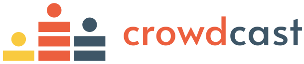
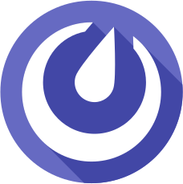
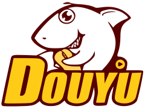

Welcome to the OSR!
The OS-SIG Open Science Room (OSR) is a conference within a conference. It is part of the Organisation for Human Brain Mapping (OHBM) annual meeting.
The OSR aims to be a welcoming and inclusive space for discussion around open practices within neuroimaging and science more generally. Joining in with the activities of the OSR is a key opportunity to connect with others in the community, learn from each other, and start collaborations to build a more inclusive, transparent and future-ready scientific field.
What happens in the OSR?
The OSR hosts content in various formats: panel discussions and emergent sessions, all centered around themes relevant to open science practices in our discipline.
Emergent sessions can be booked via contacting us.
In this years OSR, we aim to address new and emerging topics, fields and concerns, along with big picture issues in open science.
The OSR is also a space to meet, hang out, work, and collaborate!
We aim to create virtual working group and interaction spaces, to support you in making real connections with other attendees.
Who should come to the OSR?
The OSR is a space for everyone. We come with diverse skill sets, experiences and viewpoints, and we can all learn something new!
We expect visitors to the OSR to comply with the OSR Code of Conduct and the Code of Conduct for the OHBM annual meeting.
These behaviours are aligned with open science practices of sharing, collaboration, and inclusivity.
In the OSR we aim to model an academic community we wish to be a part of, where we interact with each other with curiosity, kindness and respect.
Platforms
Participation in the OSR will happen across several platforms.
OHBM registrants can view OSR content and interact with the community from within the virtual conferencing platform.
Both OHBM and zero-cost participants will be able to join the interactive program via Crowdcast.
Crowdcast allows us to stream all our pre-recorded talks, have live question-and-answer sessions with speakers, and interact via text and video with our global community.
We'll additionally make a text-based Mattermost environment available for chats with speakers and each other.
For informal social activities, a core part of a scientific conference, we'll use Gather.town, which was a great hit at the recent virtual OHBM Brainhack.
crowdcast

The OSR program will be broadcast via Crowdcast. To prepare, you can create a free account, and find out more about how to attend a Crowdcast event.
On the OHBM OS-SIG's Crowdcast page, you can access the list of all upcoming OSR events. Follow the account to receive event updates. Passwords to access the broadcasts will be emailed to registered participants.
mattermost

Text-based chat on Mattermost (an open source equivalent of Slack) is part of the Open Science Room experience.
Please sign up here and join the hbm-open-science-room channel where we will be sharing information regularly.
To find out more about using Mattermost, have a look at this Mattermost basics demo video or their User Guide.
youtube
You can also watch the program, without participating in the events, via Youtube.
All content will be posted to our OS-SIG Youtube Channel. You can subscribe to the channel for event updates.
DouYu

You can also watch the program, without participating in the events, via DouYu.
All content will be posted to our OS-SIG DouYu Channel. You can subscribe to the channel for event updates.
2024 OSR Sponsors

How to get in touch!
We would be very pleased to hear from you to discuss any aspect of the OSR! Our communication channels are listed here.
 {% endif %}
{% endif %}